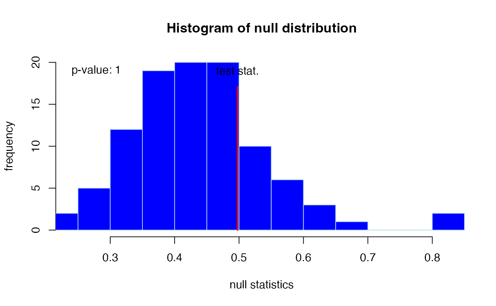

Function performing a test that evaluates the null hypothesis of block-independence against the alternative of block-dependence (presence of non-zero elements in the off-diagonal block) in the precision matrix using high-dimensional data. The mentioned test is a permutation-based test (see details).
GGMblockTest(
Y,
id,
nPerm = 1000,
lambda,
target = default.target(covML(Y)),
type = "Alt",
lowCiThres = 0.1,
ncpus = 1,
verbose = TRUE
)Data matrix. Variables assumed to be represented by columns.
A numeric vector acting as an indicator variable for two
blocks of the precision matrix. The blocks should be coded as 0 and
1.
A numeric or integer determining the number of
permutations.
A numeric representing the penalty parameter employed
in the permutation test.
A target matrix (in precision terms) for Type I ridge
estimators.
A character indicating the type of ridge estimator to be
used. Must be one of: "Alt", "ArchI", "ArchII".
A numeric taking a value between 0 and 1.
Determines speed of efficient p-value calculation.
A numeric or integer indicating the desired
number of cpus to be used.
A logical indicating if information on progress and
output should be printed on screen.
An object of class list:
A numeric
representing the observed test statistic (i.e., likelihood ratio).
A numeric giving the p-value for the block-independence
test.
A numeric vector representing the permutation
null distribution for the test statistic.
A numeric
indicating the number of permutations used for p-value calculation.
A "character" that states whether the permutation
algorithm was terminated prematurely or not.
The function performs a permutation test for the null hypothesis of block-independence against the alternative of block-dependence (presence of non-zero elements in the off-diagonal block) in the precision matrix using high-dimensional data. In the low-dimensional setting the common test statistic under multivariate normality (cf. Anderson, 2003) is: $$ \log( \| \hat{\mathbf{\Sigma}}_a \| ) + \log( \| \hat{\mathbf{\Sigma}}_b \| ) - \log( \| \hat{\mathbf{\Sigma}} \| ), $$ where the \(\hat{\mathbf{\Sigma}}_a\), \(\hat{\mathbf{\Sigma}}_b\), \(\hat{\mathbf{\Sigma}}\) are the estimates of the covariance matrix in the sub- and whole group(s), respectively.
To accommodate the high-dimensionality the parameters of interest are
estimated in a penalized manner (ridge-type penalization, see
ridgeP). Penalization involves a degree of freedom (the
penalty parameter: lambda) which needs to be fixed before testing. To
decide on the penalty parameter for testing we refer to the
GGMblockNullPenalty function. With an informed choice on the
penalty parameter at hand, the null hypothesis is evaluated by permutation.
Hereto the samples are permutated within block. The resulting permuted data
set represents the null hypothesis. Many permuted data sets are generated.
For each permutation the test statistic is calculated. The observed test
statistic is compared to the null distribution from the permutations.
The function implements an efficient permutation resampling algorithm (see
van Wieringen et al., 2008, for details.): If the probability of a p-value
being below lowCiThres is smaller than 0.001 (read: the test is
unlikely to become significant), the permutation analysis is terminated and
a p-value of unity (1) is reported.
When verbose = TRUE also graphical output is generated: A histogram
of the null-distribution. Note that, when ncpus is larger than 1,
functionalities from
snowfall are imported.
Anderson, T.W. (2003). An Introduction to Multivariate Statistical Analysis, 3rd Edition. John Wiley.
van Wieringen, W.N., van de Wiel, M.A., and van der Vaart, A.W. (2008). A Test for Partial Differential Expression. Journal of the American Statistical Association 103: 1039-1049.
## Obtain some (high-dimensional) data
p = 15
n = 10
set.seed(333)
X = matrix(rnorm(n*p), nrow = n, ncol = p)
colnames(X)[1:15] = letters[1:15]
id <- c(rep(0, 10), rep(1, 5))
## Generate null distribution of the penalty parameter
lambda0dist <- GGMblockNullPenalty(X, id, 5, 0.001, 10)
## Location of null distribution
lambdaNull <- median(lambda0dist)
## Perform test
testRes <- GGMblockTest(X, id, nPerm = 100, lambdaNull)
#> 0 of 100 permutations done, and counting...
#> 25 of 100 permutations done
#> 25 of 100 permutations done, and counting...
#> 50 of 100 permutations done
#> 50 of 100 permutations done, and counting...

#>
#> Likelihood ratio test for block independence
#> ----------------------------------------
#> -> number of permutations : 100
#> -> test statistic : 0.498
#> -> p-value : 1
#> -> remark : resampling terminated prematurely due to unlikely significance
#> ----------------------------------------
#>